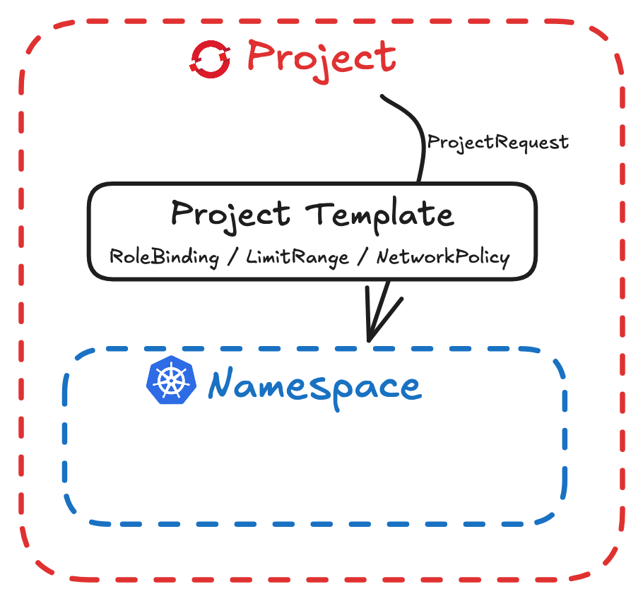

6. Enable Developer Self-Service
1. ResourceQuota¶
Workload Resource Limit
For resource limitating purpose, workloads can specify the following properties:
- limits: MAXIMAL resource consumption.
- requests: MINIMAL resource consumption, to prevent deployments of new workloads if the cluster has insufficient resources.
ResourceQuota defines constraint that applies to the one namespace, more check here。
ResourceQuota are extensible
这里的 extensible/可扩展 指的是 Kubernetes 允许 ResourceQuota 配置不同的 API 组，甚至是 自定义资源（CRD）配额。
也是这个可扩展性，导致 Kubernetes 本身无法验证 ResourceQuota 是否正确或有效。如何检测呢？
- 创建很低的 ResourceQuota
- 创建资源
- 观察资源是否成功创立，还可以看 NS 的 events：
common error:
oc get event --sort-by .metadata.creationTimestampsexceeded quota: one-cpumust specify requests.cpu
- 查看 ResourceQuota 的 status：
Example:
oc get quota one-cpu -o yamlstatus: hard: requests.cpu: "1" used: requests.cpu: "1"
2. ClusterResourceQuota¶
Cluster administrators can use ClusterResourceQuota to apply restrictions across multiple "selected" namespaces
创建¶
1. YAML¶
apiVersion: quota.openshift.io/v1
kind: ClusterResourceQuota
metadata:
name: example
spec:
quota: # NEW
hard: # From here, the same as in ResourceQuota
limits.cpu: 4
selector: # selected namespaces
annotations: {}
labels:
matchLabels:
kubernetes.io/metadata.name: example
2. Web Console¶
Administration > CustomResourceDefinitions
3. CLI¶
oc create clusterresourcequota example \
--project-label-selector=group=dev \
--hard=requests.cpu=10,limits.cpu=20 # seperate the constraints by "," - NO SPACE
查看¶
Users might not have read access to clusterresourcequota. OpenShift creates resources called AppliedClusterResourceQuota in namespaces that are affected by cluster resource quotas.
oc describe AppliedClusterResourceQuota -n example-2
3. LimitRange¶
LimitRange defines constraint that applies to Workload, for example: containers, pods, images, imagestream, and pvc.
apiVersion: v1
kind: LimitRange
metadata:
name: mem-limit-range
namespace: default
spec:
limits: # 记忆方法：因为是 LimitRange 所以 spec 由 limits 开始
- default:
memory: 512Mi
defaultRequest:
memory: 256Mi
type: Container
Limit ranges can specify the following limit types:
default(Limit): default limits for workloads, eliminate a need to declare limits explicitly in each workload.defaultRequest: defaultrequestsfor workloads- ➡️
default>=defaultRequest
- ➡️
max: the maximum value of bothrequestsandlimits.- ➡️ Consider allowing users who create workloads to edit maximum limit ranges.
min: the minimum value of bothrequestsandlimitsmaxLimitRequestRatio=limits/requests.maxLimitRequestRatio: 2means the resourcelimitcannot be more than twice therequest.
Warning
Problem: When a ResourceQuota/ClusterResourceQuota is present, all workloads must specify the corresponding limits and requests.
Solution: Set the LimitRange.spec.limits.default and LimitRange.spec.limits.defaultRequest, workloads use the requests and limits from the limit range by default. So you will be able to create workloads without seeing this error:
...output omitted...
13s Warning FailedCreate replicaset/example-74c57c8dff
Error creating: pods "example-74c57c8dff-rzl7w" is forbidden:
failed quota: example: must specify
limits.cpu for: hello-world-nginx;
limits.memory for: hello-world-nginx;
requests.cpu for: hello-world-nginx;
requests.memory for: hello-world-nginx
...output omitted...
Warning
LimitRange gives workloads(e.g. deployment) default value, but in the generated deployment.yaml you see:
# deployment
.spec.template.spec.containers[].resources: {}
LimitRange modify containers but not deployments
Danger
LimitRange do not affect existing pods.
| CLI | |
|---|---|
oc get event --sort-by .metadata.creationTimestamp |
|
oc set resources deployment example --limits=cpu=[new-cpu-limit] |
Set resource for workload |
oc adm top node |
show usage statistics of resources （没有排序，尽管命令中有top这个词） |
oc describe node/master01 |
view the node details |
oc describe node/xxx
[student@workstation ~]$ oc describe node/master01
Name: master01
Capacity: # ⬅ 总容量
cpu: 6
Allocatable: # ⬅ 可分配 CPU 资源：5500m（5.5 核心）
cpu: 5500m
Allocated resources:
(Total limits may be over 100 percent, i.e., overcommitted.)
Resource Requests Limits
-------- -------- ------
cpu 4627m (84%) 0 (0%) # ⬅ 4627m (84%), 所有正在运行的 Pod requests 的总和
# ⬅ 0 (0%)，没有设 limits
memory 12102Mi (81%) 0 (0%)
ephemeral-storage 0 (0%) 0 (0%)
hugepages-1Gi 0 (0%) 0 (0%)
hugepages-2Mi 0 (0%) 0 (0%)
- 可用的 CPU=5500m-4627m < 1vCPU
- Allocatable/可分配 CPU 资源：Kubernetes 不会把全部 6 个 CPU 核心分配给 Pod，它会预留部分资源（500m）用于系统进程（如 kubelet、容器运行时、监控等）
该配置可以在
# m = millicores / 毫核 1000m = 1 vCPU/etc/kubernetes/kubelet.conf里的system-reserved配置看到。
4. Project Template¶
OC Project vs k8s Namespace
OpenShift introduces projects to improve security and users' experience of working with namespaces. The OpenShift API server adds the Project resource type.
When you make a query to list projects, the API server lists namespaces, filters the visible namespaces to your user, and returns the visible namespaces in project format.
OpenShift introduces the ProjectRequest resource type. When you create a project request, the OpenShift API server creates a namespace from a Project Template. By using a Project Template, cluster administrators can customize namespace to have:
- specific permissions
ResourceQuotaLimitRange

Resources¶
You can add any namespaced resource to the Project Template. For example:
- Role & RoleBinding: to grant specific permissions in new projects.
- Default template grants the admin role to the user who requests the project.
- ResourceQuota & LimitRange: to ensure that all new projects have resource limits.
- Better create both
ResourceQuotaandLimitRangetogether - to have thedefaultanddefaultRequestvalues - reduce the effort for workload creation.
- Better create both
- NetworkPolicy: to enforce organizational network isolation requirements.
Creation¶
Create a file with an initial template:
oc adm create-bootstrap-project-template -o yaml > project-template.yaml
The YAML file looks like this:
apiVersion: template.openshift.io/v1
kind: Template
metadata:
creationTimestamp: null
name: project-request
objects:
- apiVersion: project.openshift.io/v1
kind: Project
metadata:
annotations:
openshift.io/description: ${PROJECT_DESCRIPTION}
openshift.io/display-name: ${PROJECT_DISPLAYNAME}
openshift.io/requester: ${PROJECT_REQUESTING_USER}
creationTimestamp: null
name: ${PROJECT_NAME}
spec: {}
status: {}
- apiVersion: rbac.authorization.k8s.io/v1
kind: RoleBinding
metadata:
creationTimestamp: null
name: admin
namespace: ${PROJECT_NAME}
roleRef:
apiGroup: rbac.authorization.k8s.io
kind: ClusterRole
name: admin
subjects:
- apiGroup: rbac.authorization.k8s.io
kind: User
name: ${PROJECT_ADMIN_USER}
parameters:
- name: PROJECT_NAME
- name: PROJECT_DISPLAYNAME
- name: PROJECT_DESCRIPTION
- name: PROJECT_ADMIN_USER
- name: PROJECT_REQUESTING_USER
Note
When a user requests a project, OpenShift replaces the ${VARIABLE} syntax with the parameters of the project request, and creates the objects in the objects key.
objectscontains a list of resources to be createdparameterscontains a list of available parameters
不建议直接手动修改改文件，可以这样做：
- 创建一个namespace
- 创建 resources 比如
RoleBinding直到获得预期的行为。 - 将 resources 用 YAML 打印出来，清理掉没必要的部分比如
status - 将 resources 加入
oc adm create-bootstrap-project-template -o yaml > project-template.yaml文件 - 再生成 project template: 注意使用 project
openshift-config:oc create -f project-template.yaml -n openshift-config
Usage¶
Now we have created the project template, to use it, we update the project resource:
修改 名为 cluster 的 projects.config.openshift.io 资源：
oc edit projects.config.openshift.io cluster
apiVersion: config.openshift.io/v1
kind: Project
metadata:
...output omitted...
name: cluster
...output omitted...
spec:
projectRequestTemplate:
name: project-request
Reverse the usage
如果要使用原本的template， 把上面 highlighted .spec.projectRequestTemplate 代码去掉就行.
如何查看 修改 已执行完成？
在 project openshift-apiserver 中查看pod的重启，以确保修改已经生效：
watch oc get pod -n openshift-apiserver
projects 和 projects.config.openshift.io
两者一个列出所有项目，一个列出项目模版：
# 有一堆大家建的projects/ns
oc get projects
oc get projects.project.openshift.io
# 结果一般只有一个，名为 cluster，这里可以设置bootstrap project template
oc get projects.config.openshift.io
拦路虎 self-provisioner¶
Note
- User with the
self-provisionerclusterrole can create projects - By default, the self-provisioner role is bound to all authenticated users (as Default User Group
system:authenticated:oauth)
在使用 Project Template 的路上，有一个拦路虎 - role self-provisioner。因为有权创建 project 的用户，也有权直接创建 namespace，这样有可能导致 namespace 缺少 Project Template 中自定义的规则！
查看该role的rolebinding：
[user@host ~]$ oc describe clusterrolebinding.rbac self-provisioners
Name: self-provisioners
Labels: <none>
Annotations: rbac.authorization.kubernetes.io/autoupdate: true
Role:
Kind: ClusterRole
Name: self-provisioner
Subjects:
Kind Name Namespace
---- ---- ---------
Group system:authenticated:oauth
两个修改方法:
- 把
system:authenticated:oauth从这个 clusterrolebinding 中移除 (比如例子):oc adm policy remove-cluster-role-from-group <ROLE> <GROUP> - 直接修改 clusterrolebinding:
oc edit clusterrolebinding self-provisioners
Danger
上面这个clusterrolebinding中有这么一条 Annotations：
rbac.authorization.kubernetes.io/autoupdate: true
它确保 self-provisioners 这样的 ClusterRoleBinding 会在集群更新时自动同步到最新的系统策略，保持集群安全和策略一致性。如果我要停用该功能：
oc annotate clusterrolebinding/self-provisioners \
--overwrite rbac.authorization.kubernetes.io/autoupdate=false
修改¶
to disable self-provisioning, using bash:
oc annotate clusterrolebinding/self-provisioners \
--overwrite rbac.authorization.kubernetes.io/autoupdate=false
oc patch clusterrolebinding.rbac self-provisioners \
-p '{"subjects": null}'
or edit YAML:
oc edit clusterrolebinding/self-provisioners
这里继续：https://rol.redhat.com/rol/app/courses/do280-4.14/pages/ch06s06